San Diego Landscape Remodeling · Company car · Version 7 · a new concept: Pergola Shade
Parked in the shade
A completely new direction. The car is wrapped in the brand's paper cream, and the only graphic is a soft sage
shadow of pergola slats and a wisteria vine falling across the back half, as if the car were parked half under one of our pergolas.
It says outdoor living without a single extra word. The lettering is small and quiet, flush left on the front doors.
The car in these images is Gio's own 2025 Juniper Model Y.
On the street
Photo-style images made with Magnific (AI, Nano Banana Pro). They are concept images, not photos of the wrapped car.
The side and rear images were made directly from Gio's own photos of his car, so the body, lights and wheels are his.
Every word was proofread letter by letter. The exact artwork is in the proofs further down.
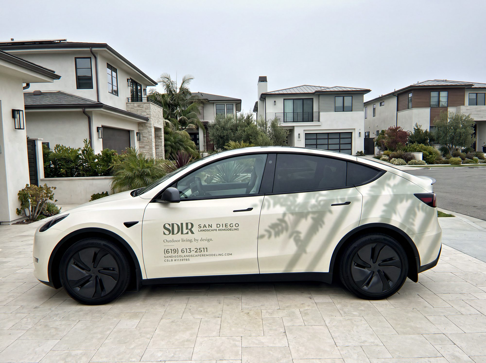
Driver side, Del Mar, soft morning light. The leaf shadow is printed into the wrap, so it stays put in full sun.
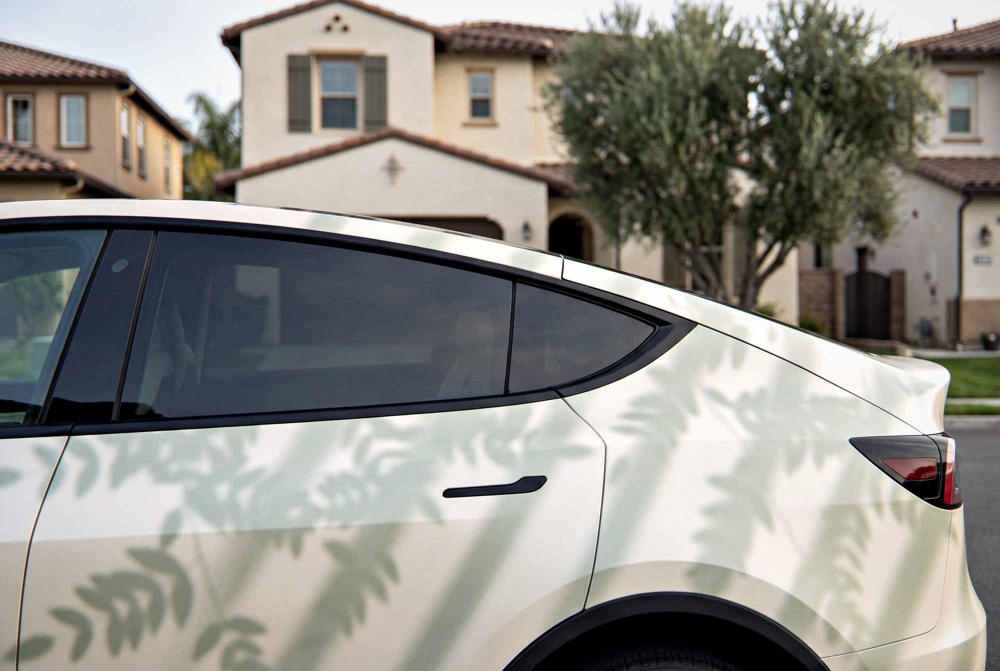
Up close: the shade on the rear door and haunch. No words, just the feeling of sitting under a pergola.
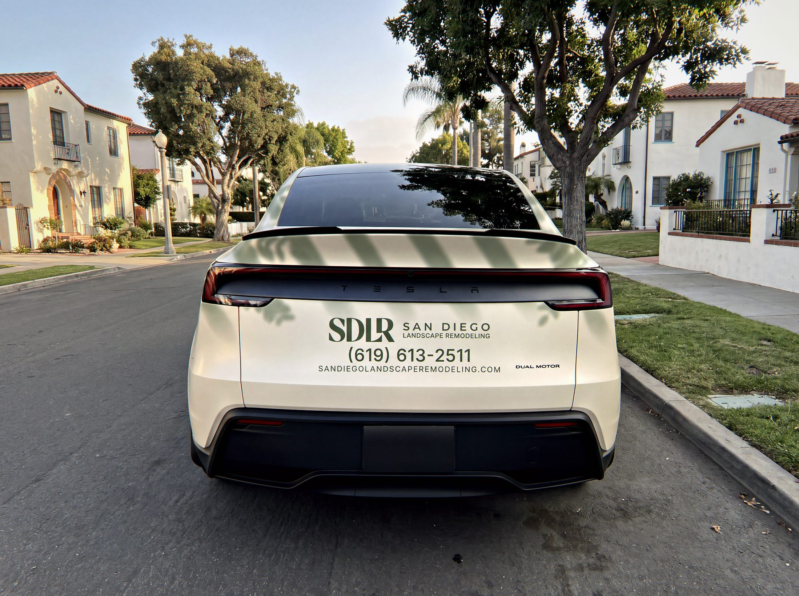
Rear, Point Loma: logo, phone and website under the light bar, and a clean rear window.
The idea
One image, no clutter. Every earlier version leaned on a drawing (the site plan). This one uses light. A pergola's slatted shade
and a hanging vine are the most recognisable picture of what SDLR builds, and people read it in a glance without knowing why.
Brand colours, used differently. The body is the brand's paper cream (#F5F1E8); the shade is printed in brand sage
(#4E5D4A) at up to 32% strength, so the green only ever appears as shadow; the single gold note is a short metallic rule under the tagline.
Quiet type. The horizontal lockup at 30 in, then Outdoor living, by design. in the brand serif (Cormorant Garamond),
then the phone, website and licence. Flush left, like a magazine page, with lots of empty cream around it.
The sunlit half and the shaded half. The front of the car is clean, the back half is in the shade. Read from the street,
the car looks calm and expensive; up close, the leaves reward a second look.
On Tesla's 3D model
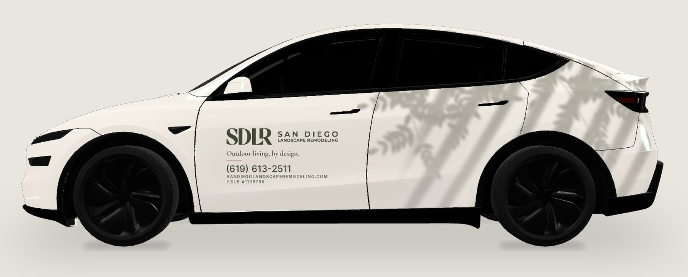
Driver side on Tesla's own 3D model of the Juniper.
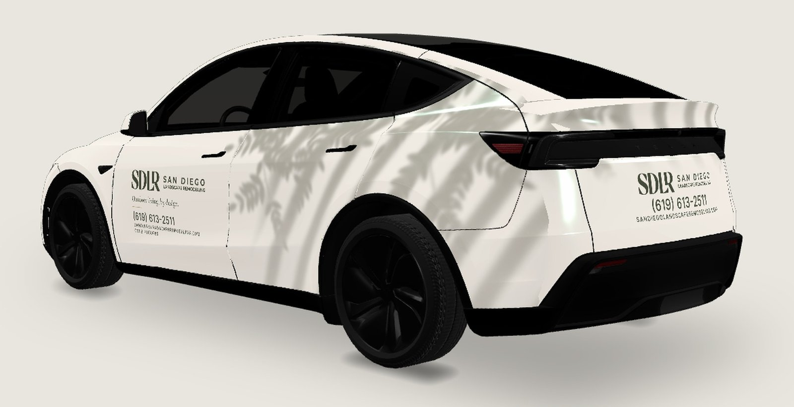
3/4 rear. (The small type softens in this projection; the print file is sharp.)
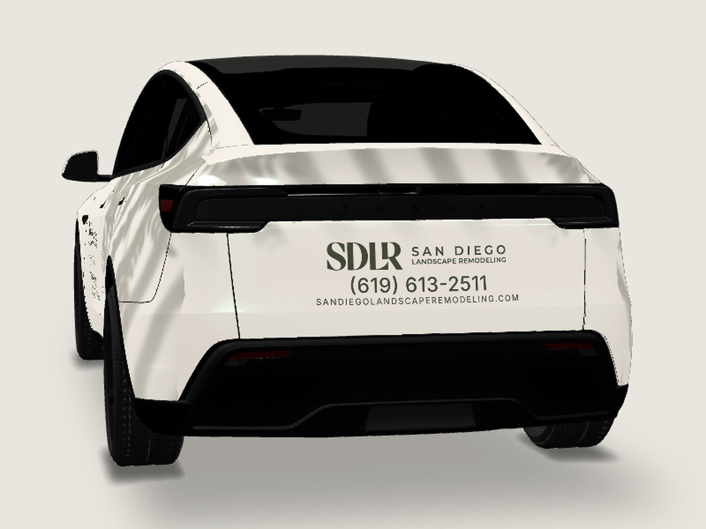
Rear.
The flat lay
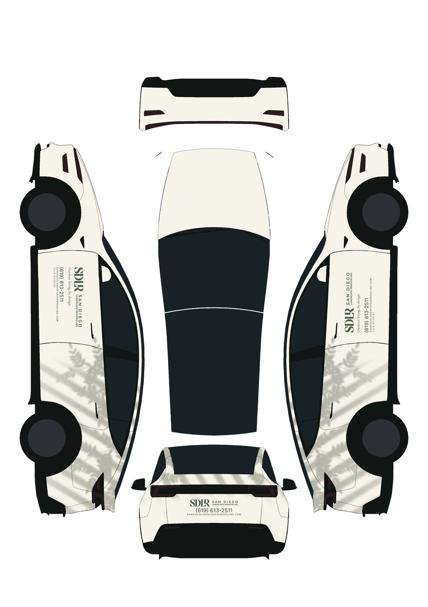
The design, flat, at 1:10: what the wrap shop prints from.
Per-side proofs
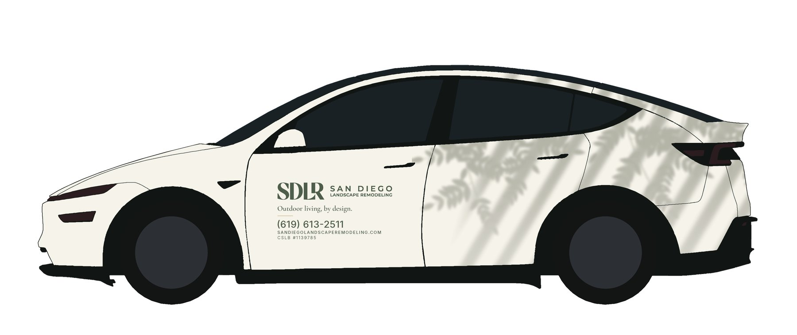
Driver side.
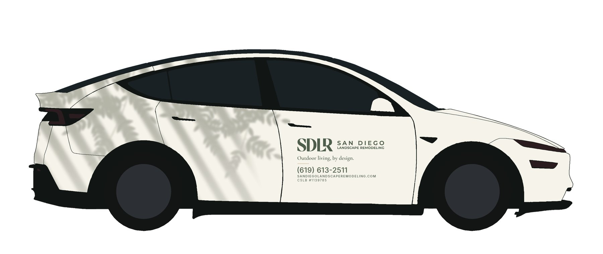
Passenger side.
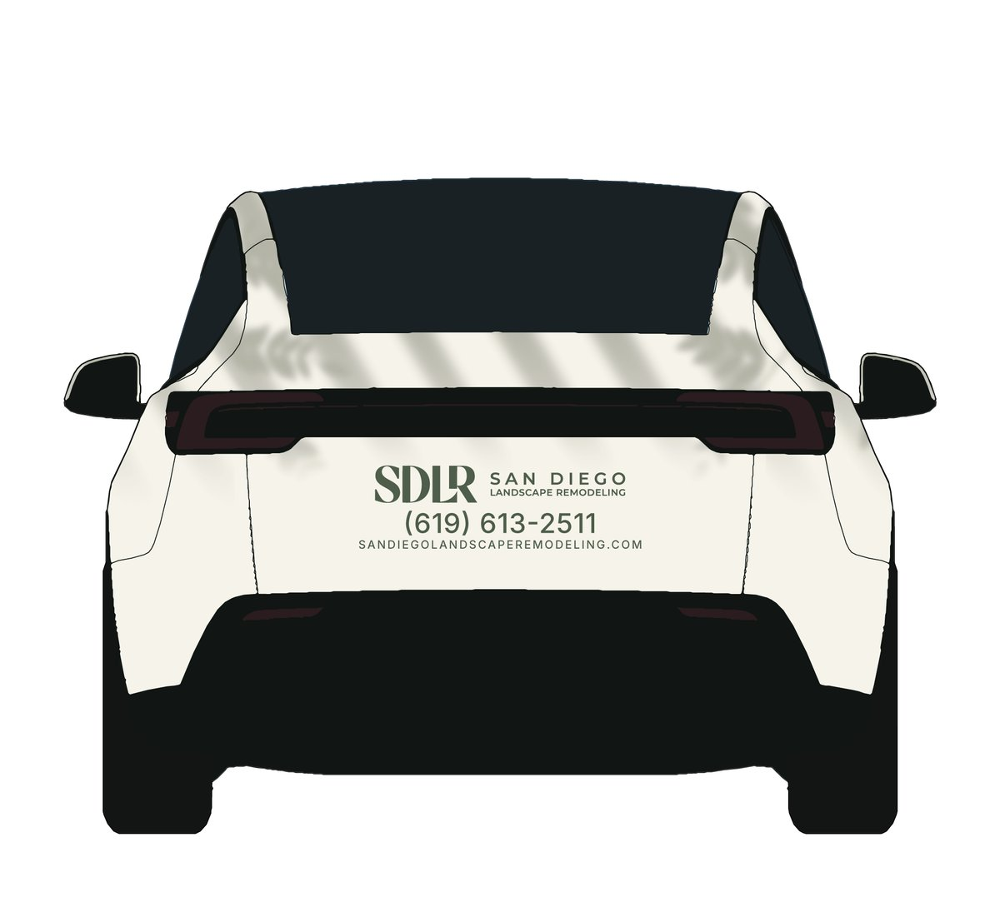
Rear.
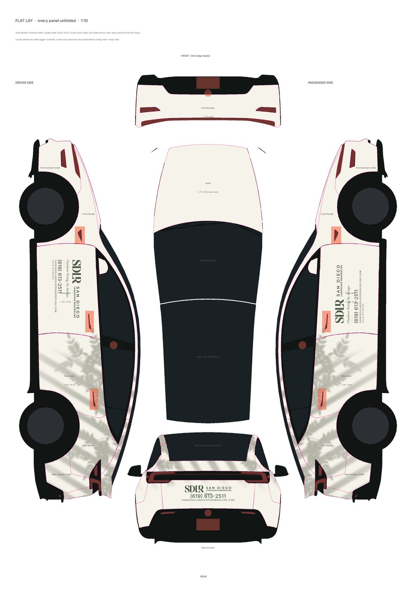
Flat lay with keep-clear zones. The door type clears the handle zone by 0.8 in.
What's on the car
Car
2025 Tesla Model Y Premium AWD, the new Juniper body, with black 19 in aero wheel covers
Body
Brand paper cream, printed on white cast film with a satin (luster) laminate
Rear doors, quarters, liftgate
The pergola shade: soft slat bands and wisteria leaves in brand sage, up to 32%, printed in the same pass; front doors and fenders stay clean
Front doors
Flush left: horizontal SDLR lockup, 30 in (sage) · Outdoor living, by design. (Cormorant Garamond, 1.2 in caps) · short gold rule (metallic gold vinyl) · (619) 613-2511 (1.8 in) · SANDIEGOLANDSCAPEREMODELING.COM · CSLB #1139785 (0.8 in)
Liftgate
Horizontal lockup, 24 in, then (619) 613-2511 (1.9 in) and the website, centred under the light bar
Rear glass
Clean: no vinyl
Before it prints
Fix the licence name: CSLB lists "San Diego Landscaping Remodeling"; the car says "Landscape". Mike corrects the record first.
Print a shade test strip (28%, 32% and 38%) and hold it on the car in daylight: the shade should read from across the street without looking like dirt.
Check the cream on the car: printed on white film it can look whiter in sun than on screen. A touch warmer is an easy change.
Quote the door jambs: grey jambs show more against cream than against green.
Measure every panel before cutting.
Working files (layered .ai, print PDF at 1:10, proof PDF, README) live in Drive:
02 Clients/san-diego-landscape-remodeling/Vehicle/wrap-design/2026-11-21-v7/ (versions 1 to 6 kept beside it)